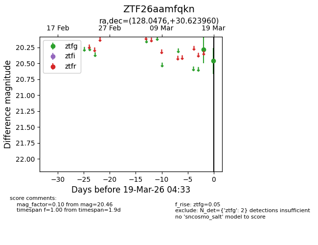
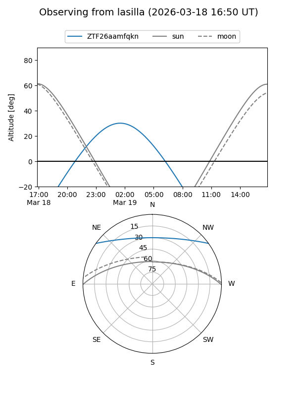
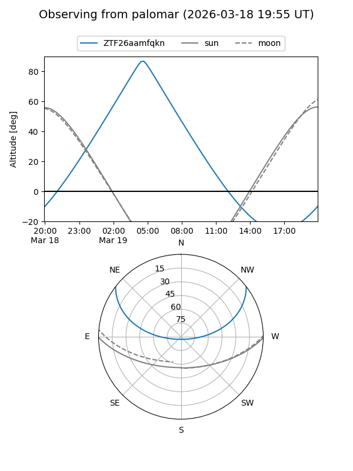

ZTF26aamfqkn
Target ZTF26aamfqkn at 2026-03-19 04:35
Aliases and brokers:
FINK: link
Lasair: link
ALeRCE: link
alt names
ZTF26aamfqkn (ztf,fink_ztf)
Coordinates:
equatorial (ra, dec) = 128.0476,+30.62396
equatorial (HMS+DMS) = 08:32:11.43,+30:37:26.26
galactic (l, b) = (192.7412,+33.93299)
Flags:
Photometry:
last ztfg=20.46
2 ztfg detections
Lightcurve

Visibility


Additional plots